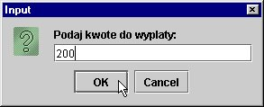

| « poprzedni punkt | nastêpny punkt » |
Znana nam ju¿ instrukcja if ma postaæ:
if (war) ins
gdzie:
- wyr - warunek - dowolne wyra¿enie, maj±ce typ wyniku boolean
- ins - dowolna instrukcja (w tym grupuj±ca)
Instrukcja if-else rozszerza dzia³anie instrukcji if. Ma ona postaæ.
if (war) ins1
elseins2
gdzie:
- wyr - warunek - dowolne wyra¿enie, maj±ce typ wyniku boolean
- ins1, ins2 - dowolne instrukcje (w tym grupuj±ce)
Ró¿nica pomiêdzy zastosowaniem instrukcji if oraz if-else mo¿na zobaczyæ wyra¼nie na
poni¿szych fragmentach kodu:
if (a == b) c = d;
c = e;
System.out.println( a + " " + b + " " + c + " " + d);
oraz
if (a == b) c = d;
else c = e;
System.out.println( a + " " + b + " " + c + " " + d);
W pierwszym fragmencie instrukcja c = d; wykonana zostanie tylko wtedy, gdy
warto¶æ zmiennej a bêdzie równa warto¶ci zmiennej b. Niezale¿nie jednak od
tego, czy warunek ten zajdzie czy nie - bezpo¶rednio po wykonaniu instrukcji
if zmiennej c zostanie przypisana warto¶æ zmiennej e (if jest wiêc tu bez
sensu!). Nastêpnie wyniki zostan± wyprowadzone na standardowe wyj¶cie.
W drugim fragmencie zmienna c bêdzie mia³a rzeczywi¶cie warto¶æ zale¿n± od
tego czy a == b czy te¿ nie (wykonane zostanie przypisanie albo c = d albo
c = e). Potem wyniki powêdruj± na wyj¶cie.
Przyk³ad ten nie znaczy oczywi¶cie, ¿e zawsze trzeba stosowaæ instrukcjê if-else, a samo if ma mniejsze znaczenie.
Warto zauwa¿yæ, ¿e instrukcjami ins1 i ins2 (w syntaktycznym opisie instrukcji
if-else) mog± byæ równie¿ instrukcje if. Pozwala to sprawdzaæ rozga³êzione
warunki np.
char op;
double a, b, r;
...
if (op == '+') r = a + b;
else if (op == '-') r = a - b;
else if (op == '*') r = a*b;
else if (op == '/') r = a/b;
else System.out.println("B³êdny kod operacji");
Przy takich okazjach powstaje kwestia: które else odpowiada któremu if ?
Zasada jest prosta: danemu else odpowiada pierwsze poprzedzaj±ce go i znajduj±ce
siê w tym samym bloku if nie maj±ce jeszcze swojej "pary" w postaci else.
Wciêcia - poprawiaj±ce czytelno¶æ - programu w ¿aden sposób nie decyduj±
o odpowiednio¶ci if i else.
Je¶li kto¶ na przyk³ad napisze:
if (a >= 0) if (a <= 100) System.out.println( "a w przedziale od 0 do 100");
else System.out.println("a mniejsze od 0");
to bêdzie to oczywisty b³±d.
Tak± konstrukcjê mo¿na i nale¿y oczywi¶cie zaprogramowaæ inaczej ( if (a
>= 0 && a <= 100) ... ), ale gdyby siê kto¶ upar³ przy zastosowaniu
podwójnego if, to nale¿a³oby to zapisaæ tak
if (a >= 0) {
if (a <= 100) System.out.println("a w przedziale od 0 do 100");
}
else System.out.println("a mniejsze od 0");
Zastosowanie nawiasów klamrowych (uczynienie bloku z drugiej instrukcji if)
rozwi±zuje problem, bowiem dopasowanie if i else odbywa siê zawsze tylko
w ramach tego samego bloku.
A. Z³e dopasowanie if i else w przypadku kilku instrukcji if (omówione przed chwil±)
B. Stawianie ¶rednika po nawiasie zamykaj±cym warunek instrukcji if np. :
if (a > b);
System.out.println("a > b"); // niezale¿nie od tego czy a>b !
C. Zapomnienie nawiasu zamykaj±cego instrukcjê grupuj±c± np.
if (a > b) {
c = a + b;
d = e + f;
else c = d + f;
B³êdy te s± szczególnie niebezpieczne, gdy¿ dotycz± logiki programu i nie mog± byæ wykryte przez kompilator
Np. je¶li kto¶ chce powiedzieæ co¶ o liczbie a (czy jest du¿a, ¶rednia, ma³a) to móg³by zapisaæ to w ten sposób:
if (a >= 1000) System.out.println("Du¿a liczba")
if (a >= 100) System.out.println("¦rednia liczba")
if (a >= 10) System.out.println("Ma³a liczba")
¦rednia liczba
Ma³a liczba
co jest oczywistym b³êdem, bo je¶li a = 1000, ten fragment wyprowadzi na konsolê wzajemnie wykluczaj±c± siê informacjê.
Ach, potrzebne jest else, ale uwaga - kolejno¶æ sprawdzania warunków jest istotna.
Gdyby kto¶ nie przywi±zywa³ do niej istotnej wagi, móg³by zapisaæ:
if (a >= 10) System.out.println("Ma³a liczba");
else if (a >= 100) System.out.println("¦rednia liczba");
else if (a >= 1000) System.out.println("Du¿a liczba");
co znowu daje ca³kiem niepoprawny wynik dla a = 1000: napis "Ma³a liczba"
Dopiero zastosowanie else przy w³a¶ciwej kolejno¶ci warunków da (przy a = 1000) w³a¶ciwy wynik "Du¿a liczba".
if (a >= 1000) System.out.println("Du¿a liczba");
else if (a >= 100) System.out.println("¦rednia liczba");
else if (a >= 10) System.out.println("Ma³a liczba");
Zauwa¿my jednak, ¿e temu fragmentowi brakuje "zupe³no¶ci": co siê stanie
je¶li a równa siê np. 1? Nie dostaniemy ¿adnej informacji! Potrzebne jest
zatem jeszcze jedno ("zamykaj±ce") else, które bêdzie obs³ugiwaæ wszystkie
nie uwzglêdnione warunki.
Na przyk³ad:
if (a >= 1000) System.out.println("Du¿a liczba");
else if (a >= 100) System.out.println("¦rednia liczba");
else if (a >= 10) System.out.println("Ma³a liczba");
else System.out.println("Liczba mikra, bo mniejsza od 10")
Czasem nie stosowanie else przy wykluczaj±cych siê warunkach nie prowadzi
do b³êdów w programie, ale - na pewno nalezy do z³ego stylu i powoduje niepotrzebne
sprawdzanie warunków, o których ju¿ wiadomo, ¿e s± fa³szywe.
Na przyk³ad je¶li tex jest typu String, to poni¿szy fragment programu:
if (txt.equals("Ala")) a = 1;
if (txt.equals("kot")) a = 2;
if (txt.equals("koñ")) a = 3;
wykona siê bezb³êdnie i da prawidlowe wyniki, ale je¶li txt jest "Ala", to
niepotrzebnie sprawdzane s± pozosta³e warunki ("kot" i "koñ").
Rozwa¿my teraz praktyczny przyk³ad zastosowania instrukcji if oraz if-else.
Spróbujemy zbudowac prost± klasê symuluj±c± dzia³anie bankomatu.
Bankomat:
- pyta o PIN
- sprawdza czy podany PIN jest w³a¶ciwy
- je¶li tak - pyta o kwotê do wyp³aty; je¶li nie - przerywa transakcjê
- sprawdza, czy kwota mie¶ci siê w limicie dziennym
- je¶li tak - dokonuje wyp³aty; je¶li nie - przerywa transakcjê.
Z punktu widzenia u¿ytkownika bankomatu wa¿ne jest tylko to, ¿e bankomat
pyta o PIN a nastêpnie o kwotê do wyp³aty i (ewentualnie) j± wyp³aca.
Zatem klasa Bankomat pwoinna dostarczyæ jej u¿ytkownikom dwóch odpowiadaj±cych tym dzia³aniom metod nazwijmy je: askPin (zapytaj o pin) i askAmmountAndWithdraw (zapytaj o kwotê i wyp³aæ).
Wszelkie sprawdzenia poprawno¶ci wprowadzonych danych (oraz akceptacja kwoty
do wyp³aty) powinny siê odbywaæ wewnêtrz klasy Bankomat i nie obarczaæ u¿ytkowników
tej klasy. Ci powinni tylko móc u¿yæ w/w metod i ew. móc sprawdziæ, czy metody
te zakoñczy³y swoje dzia³anie pomy¶lnie czy te¿ nie (na skutek braku akceptacji
PINu czy kwoty). Z tego sprawdzenia na razie nie bêdziemy korzystaæ, zatem
program g³ówny symuluj±cy dzia³anie bankomatu i korzystaj±cy z gotowej klasy
Bankomat móg³by wygl±daæ tak:
class BankomatTest {
public static void main(String[] args) {
Bankomat b = new Bankomat();
b.askPin();
b.askAmmountAndWithdraw();
System.exit(0);
}
}
A jego dzia³anie pokazuje nastêpuj±ca sekwencja dialogów (generowanych przez klasê Bankomat):
wprowadzanie numeru PIN:

wprowadzenie kwoty do wyp³aty:
po jej zakceptowaniu - wyp³ata:
Gdyby numer PIN okaza³ siê nieprawid³owy - to klasa Bankomat powinna o tym
poinformowaæ w wywo³aniu metody askPin (i oczywi¶cie nie dopu¶ciæ do pytania
o kwotê), a gdyby ¿±dana kwota przekracza³a limit - równie¿ poinformowaæ
i nie dopu¶ciæ do wyp³aty:

Istotn± rolê bêdzie w niej odgrywaæ sprawdzanie poprawno¶ci wprowadzanych danych, które zapiszemy w³a¶nie za pomoc± instrukcji if-else.
Zobaczmy teraz jak wygl±da klasa Bankomat.
Oczywi¶cie, bankomat - sprawdzaj±c dane - komunikuje siê z jakim¶ "kartowym"
czy bankowym, centrum. W naszym programie bêdzie go (w uproszczony sposób)
reprezentowaæ klasa CardIdent (na razie potraktujmy j± jako dan±, bo jej
konstrukcja wykracza poza omówiony dot±d materia³).
Dla naszej klasy Bankomat wa¿ne jest, by rozpoczynaj±c dzia³anie nawi±za³a
³aczno¶c z klas± CardIdent, co symulujemy w konstruktorze klasy Bankomat
poprzez wywo³anie statycznej metody klasy CardIdent - init().
W metodzie askPin() - po pobraniu w dialogu wej¶ciowym pin-u - bankomat
zwraca siê do klasy CardIdent o potwierdzenie numeru pin i o kwotê limitu
zwi±zan± z dan± kart± (skorzystamy tu ze statycznej metody CardInit.getLimit(), która zwraca aktualny limit lub -1, gdy numer pin jest wadliwy):
limit = CardInit.getInit()
Je¿eli pin jest Ok, to zapisujemy dane: pin oraz bie¿±cy limit w prywatnych polach klasy Bankomat (currentPin i currentLimit
). Zwróæmy uwagê: informacje te s± niedostêpne dla ¿adnej innej klasy oprócz
Bankomatu. Metoda askPin() zwraca warto¶c true, je¶li wszystko siê powiod³o
i false - je¶li klient zrezygnowal z transakcji lub wprowadzi³ wadliwy pin.
Metoda askAmmountAndWithdraw pyta o kwotê do wyplaty - bêdzie j± przechowywac w zmiennej ammount (ale tylko w przypadku, gdy jest ju¿ ustalony pin; je¶li pin by³ wadliwy, to pole currentPin zawiera null i metoda konczy dzia³anie z wynikem false - nie bêdzie wyplaty; to zapewniamy w pierwszym wierszu metody, pisz±c if (currentPin == null) return false;).
Je¶li kwota do wyp³aty przekracza limit - to do wyp³aty te¿ nie dochodzi
i pojawia siê odpowiedni komunikat. W przeciwnym razie - kwota jest wyp³acana,
do centrum kartowego posy³any jest komunikat o wyp³aconej kwocie po to, by
ew. zmniejszyæ dzienny limit ( CardIdent.changeLimit(currentPin, ammount);
), a warto¶ci pól currentPin i currentLimit s± zerowane w przygotowaniu do
nastêpnej transakcji.
import javax.swing.*;
public class Bankomat {
private static String CANCEL_MSG = "Zrezygnowano z transakcji. Do widzenia";
private String currentPin;
private int currentLimit;
public Bankomat() {
CardIdent.init();
}
public boolean askPin() {
String pin = ask("Wprowadz numer PIN:");
boolean pinOk = false;
int limit = 0;
if (pin == null) say(CANCEL_MSG);
else {
limit = CardIdent.getLimit(pin);
if (limit == -1) say("Wadliwy PIN");
else {
pinOk = true;
currentPin = pin;
currentLimit = limit;
}
}
return pinOk;
}
public boolean askAmmountAndWithdraw() {
if (currentPin == null) return false;
boolean withdrawAccepted = false;
String request = ask("Podaj kwote do wyplaty:");
if (request == null) say(CANCEL_MSG);
else {
int ammount = Integer.parseInt(request);
if (ammount > currentLimit) say("Limit przekroczony.");
else {
CardIdent.changeLimit(currentPin, ammount);
say("Wyplacam kwote : " + ammount + " zl");
withdrawAccepted = true;
}
}
currentPin = null;
return withdrawAccepted;
}
private String ask(String txt) {
return JOptionPane.showInputDialog(txt);
}
private void say(String txt) {
JOptionPane.showMessageDialog(null, txt);
}
Zwróæmy te¿ uwagê na dwa elementy:
- dla u³atwienia sobie ¿ycia w klasie Bankomat zawarli¶my dwie metody dialogowe - ask i say; uczynili¶my je jednak prywatnymi, bowiem maj± znaczenie tylko dla klasy Bankomat i nie powinny byæ udostêpnione u¿ytkownikom tej klasy
- komunikat o rezygnacji z transakcji (który pojawia siê gdy
u¿ytkownika zamyka okno dialogowe np. pzrycsikiem Cancel) uczynili¶my sta³±
statyczn± w klasie; sta³± - poniewa¿ jest on wykorzystywany w dwóch miejscach
(osczêdno¶æ pisania i ³atwo¶æ zmiany) i poniewa¿ nie ma sensu; statyczn±
- poniewa¿ nie ma sensu by by³ on zawarty w ka¿dym obiekcie klasy Bankomat.
W katalogu samples\bankomat9 znajduj± siê wszystkie omawiane klasy.
Informacje niezbêdne do testowania programu:
| Poprawne PINy | Limit |
| 1234 | 200 |
| 2345 | 300 |
| 3456 | 400 |
| 4567 | 500 |
| 5678 | 500 |
| 6789 | 500 |
| « poprzedni punkt | nastêpny punkt » |